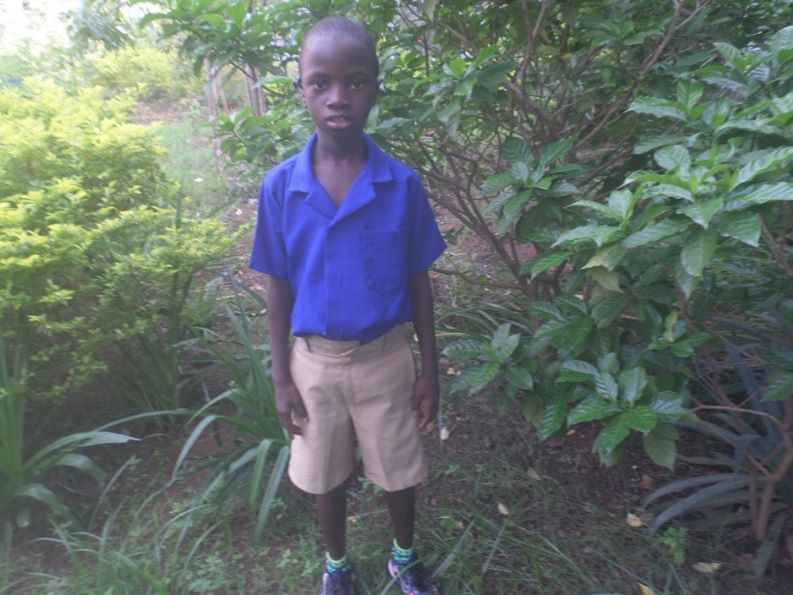
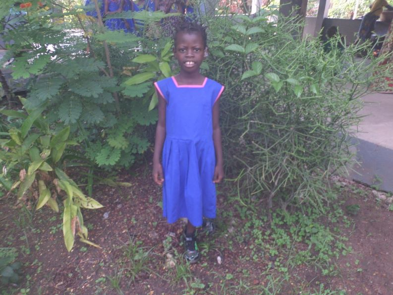

The children • 250 pupils
Every child has a name and a future.
Boys & girls 4–18, 110 boarders from remote villages. Small classes, big family.

Boarding family
No parents in Makeni? You live with us.

John Kamara, 8
Born 17 July 2016, Wasima village. Second in family; father died at age 5. Now thriving at St Joseph's.

Isatu O. Turay, 8
Fifth of five, Makeni. Father a welder. A day pupil learning speech, sign and confidence.
Sponsor a child's hearing aid — £30/month
Sponsor →